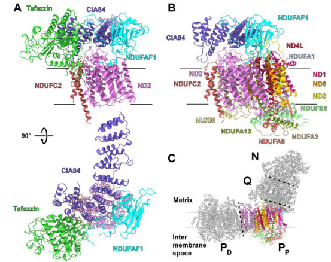

Neurospora crassa CIA30 (Complex I intermediate-associated protein 30, also known as cia35) is a mitochondrial chaperone specifically involved in the assembly of NADH:ubiquinone oxidoreductase (complex I). CIA30 is the founding member of the CIA30/NDUFAF1 family and was identified as one of two novel extra proteins (30 kDa and 84 kDa) that associate with the large membrane arm assembly intermediate of complex I but are not constituent parts of the mature complex (PMID:9769214). Disruption mutants accumulate the matrix arm and the small membrane arm assembly intermediate but cannot form the large membrane arm intermediate. Pulse-chase experiments showed that CIA30 is repeatedly involved in many assembly cycles, consistent with chaperone function (PMID:9769214). While described as a "chaperone" in the original paper, CIA30 functions specifically as a complex I assembly factor rather than as a general unfolded protein binding protein. The GO:0051082 annotation reflects binding to unassembled complex I subunits during assembly, which is a specific assembly chaperone function, not general unfolded protein binding.
| GO Term | Evidence | Action | Reason |
|---|---|---|---|
|
GO:0005739
mitochondrion
|
IBA
GO_REF:0000033 |
ACCEPT |
Summary: IBA annotation for mitochondrion localization. CIA30 is a mitochondrial protein, confirmed by direct experimental evidence (PMID:9769214). UniProt lists mitochondrion as the subcellular location and the protein has a mitochondrial transit peptide (residues 1-8). The IBA annotation is consistent with the IEA annotation from UniProt and the experimental evidence.
Reason: Mitochondrial localization is the primary and only documented location of CIA30, directly demonstrated in PMID:9769214. The protein has a mitochondrial transit peptide. Core localization annotation.
Supporting Evidence:
file:NEUCR/cia30/cia30-deep-research-falcon.md
In N. crassa, the cloned CIA30 protein is reported as a globular protein preceded by a typical mitochondrial import sequence of 12 amino acids, supporting mitochondrial targeting and import.
|
|
GO:0006120
mitochondrial electron transport, NADH to ubiquinone
|
IBA
GO_REF:0000033 |
ACCEPT |
Summary: IBA annotation for mitochondrial electron transport, NADH to ubiquinone. CIA30 is required for assembly of complex I, which performs NADH:ubiquinone oxidoreduction. Without CIA30, the large membrane arm intermediate cannot be formed, and the mature complex I is not assembled (PMID:9769214). CIA30 is not a subunit of the mature complex but is essential for its assembly. The IBA annotation is appropriate as CIA30 is involved in the pathway, albeit indirectly through its assembly function.
Reason: CIA30 is essential for complex I assembly (PMID:9769214). While not a subunit of the mature complex, its loss prevents proper complex I formation and thus NADH to ubiquinone electron transport. The IBA annotation appropriately captures this involvement.
Supporting Evidence:
PMID:9769214
Mutants generated by disrupting the genes of either of the two proteins accumulate the matrix arm of complex I and the small membrane arm assembly intermediate, but are incapable of forming the large intermediate
|
|
GO:0010257
NADH dehydrogenase complex assembly
|
IBA
GO_REF:0000033 |
ACCEPT |
Summary: IBA annotation for NADH dehydrogenase complex assembly. This is the core biological process function of CIA30. PMID:9769214 directly demonstrated that CIA30 is required for assembly of the large membrane arm intermediate of complex I, and pulse-chase experiments showed it participates in repeated assembly cycles. The IBA annotation is consistent with the NAS annotation for the more specific GO:0032981 term.
Reason: NADH dehydrogenase complex assembly is the core function of CIA30. Directly demonstrated by disruption mutants that fail to form the large membrane arm intermediate (PMID:9769214). The IBA is well supported and phylogenetically appropriate for the CIA30/NDUFAF1 family.
Supporting Evidence:
PMID:9769214
Mutants generated by disrupting the genes of either of the two proteins accumulate the matrix arm of complex I and the small membrane arm assembly intermediate, but are incapable of forming the large intermediate
PMID:9769214
Pulse-chase labelling experiments showed that the two proteins are repeatedly involved in many assembly cycles of the intermediate
file:NEUCR/cia30/cia30-deep-research-falcon.md
Neurospora complex I assembly was established to occur stepwise from intermediates. CIA30 (together with CIA84) is associated with the large membrane-arm assembly intermediate and is not found in the mature complex I holoenzyme.
|
|
GO:0051082
unfolded protein binding
|
IBA
GO_REF:0000033 |
MARK AS OVER ANNOTATED |
Summary: IBA annotation for unfolded protein binding. GO:0051082 is proposed for obsoletion (go-ontology#30962). CIA30 was described as a "novel chaperone" in the original publication (PMID:9769214), but its function is specifically as a complex I assembly factor, not as a general unfolded protein binding protein. CIA30 associates exclusively with the large membrane arm assembly intermediate of complex I and participates in repeated assembly cycles (PMID:9769214). This is a specific assembly chaperone function rather than general unfolded protein binding. The term "chaperone" as used in the original paper refers to the specific assembly assistance role, not to broad unfolded protein recognition. Per UPB project rules, specific assembly chaperones that are not general unfolded protein binding proteins should be marked as over-annotated or modified.
Reason: CIA30 is a specific complex I assembly factor, not a general unfolded protein binding protein. While described as a "chaperone" in PMID:9769214, this refers to its specific role in complex I membrane arm assembly -- it associates exclusively with the large membrane arm assembly intermediate and does not bind unfolded proteins generally. The GO:0051082 annotation overstates the generality of CIA30's binding specificity. The complex I assembly function is already captured by GO:0010257 and GO:0032981.
Supporting Evidence:
PMID:9769214
In the wild-type, the extra proteins exclusively associate with the large membrane arm assembly intermediate
PMID:9769214
These results indicate that the two proteins are novel chaperones specific for complex I membrane arm assembly
file:NEUCR/cia30/cia30-deep-research-falcon.md
The strongest organism-specific evidence indicates CIA30 is imported into mitochondria, exists in free and assembly-bound pools, and binds transiently to a large membrane-arm assembly intermediate (not the mature holoenzyme).
|
|
GO:0005739
mitochondrion
|
IEA
GO_REF:0000044 |
ACCEPT |
Summary: IEA annotation for mitochondrion from UniProt subcellular location mapping. Consistent with the IBA annotation for the same term and the direct experimental evidence from PMID:9769214. UniProt lists mitochondrion as the subcellular location.
Reason: Consistent with IBA annotation and direct experimental evidence. Mitochondrion is the primary and only documented location of CIA30.
|
|
GO:0032981
mitochondrial respiratory chain complex I assembly
|
NAS
PMID:9769214 Involvement of two novel chaperones in the assembly of mitoc... |
ACCEPT |
Summary: NAS annotation for mitochondrial respiratory chain complex I assembly from PMID:9769214. This is the core biological process function of CIA30. The original paper titled "Involvement of two novel chaperones in the assembly of mitochondrial NADH:Ubiquinone oxidoreductase (complex I)" directly describes the role of CIA30 in complex I assembly. The NAS evidence code is appropriate as the paper provides direct experimental evidence for complex I assembly involvement. This is a more specific child of GO:0010257.
Reason: Complex I assembly is the core function of CIA30. PMID:9769214 directly demonstrated this through disruption mutants, pulse-chase experiments, and co-purification with assembly intermediates. This more specific term (child of GO:0010257) appropriately captures the respiratory chain complex I assembly function.
Supporting Evidence:
PMID:9769214
These results indicate that the two proteins are novel chaperones specific for complex I membrane arm assembly
|
|
GO:0051082
unfolded protein binding
|
IDA
PMID:9769214 Involvement of two novel chaperones in the assembly of mitoc... |
MARK AS OVER ANNOTATED |
Summary: IDA annotation for unfolded protein binding from PMID:9769214. GO:0051082 is proposed for obsoletion (go-ontology#30962). The original paper demonstrated that CIA30 associates with the large membrane arm assembly intermediate of complex I and is involved in repeated assembly cycles (PMID:9769214: "the extra proteins exclusively associate with the large membrane arm assembly intermediate" and "Pulse-chase labelling experiments showed that the two proteins are repeatedly involved in many assembly cycles"). The authors called CIA30 a "chaperone" but specified it was "specific for complex I membrane arm assembly." This is a specific assembly factor function, not general unfolded protein binding. The protein does not bind unfolded proteins broadly -- it binds specifically to complex I assembly intermediates. The IDA evidence demonstrates complex I assembly intermediate binding, not general unfolded protein binding.
Reason: The IDA evidence from PMID:9769214 demonstrates that CIA30 binds specifically to complex I assembly intermediates, not to unfolded proteins generally. The original paper explicitly states the proteins are "chaperones specific for complex I membrane arm assembly." GO:0051082 overstates the generality of the binding. The complex I assembly function is better captured by GO:0032981 and GO:0010257. While CIA30 may indeed interact with unfolded or partially assembled complex I subunits, calling this "unfolded protein binding" conflates a specific assembly factor role with general chaperone function.
Supporting Evidence:
PMID:9769214
In the wild-type, the extra proteins exclusively associate with the large membrane arm assembly intermediate
PMID:9769214
Pulse-chase labelling experiments showed that the two proteins are repeatedly involved in many assembly cycles of the intermediate
PMID:9769214
These results indicate that the two proteins are novel chaperones specific for complex I membrane arm assembly
|
|
GO:0044183
protein folding chaperone
|
NAS
PMID:9769214 Involvement of two novel chaperones in the assembly of mitoc... |
NEW |
Summary: New molecular-function annotation to capture CIA30's chaperone-like role in mitochondrial complex I assembly. The evidence supports a specific assembly chaperone activity for complex I membrane-arm intermediates, not broad unfolded-protein binding.
Reason: GO:0044183 better reflects the core molecular function already summarized for CIA30 than GO:0051082. CIA30 is transiently associated with complex I assembly intermediates, is not a mature complex I subunit, and was described as a chaperone specific for complex I membrane arm assembly. This NEW annotation should be interpreted narrowly as assembly-chaperone activity for mitochondrial respiratory chain complex I biogenesis.
Supporting Evidence:
PMID:9769214
These results indicate that the two proteins are novel chaperones specific for complex I membrane arm assembly
file:NEUCR/cia30/cia30-deep-research-falcon.md
CIA30 is a transient complex I assembly factor/chaperone, not a mature holoenzyme subunit. In N. crassa it associates with the large membrane-arm assembly intermediate and is released during assembly progression.
|
The research report should be a detailed narrative explaining the function, biological processes, and localization of the gene product. Citations should be given for all claims.
You should prioritize authoritative reviews and primary scientific literature when conducting research. You can supplement
this with annotations you find in gene/protein databases, but these can be outdated or inaccurate.
We are specifically interested in the primary function of the gene - for enzymes, what reaction is catalyzed, and what is the substrate specificity? For transporters, what is the substrate? For structural proteins or adapters, what is the broader structural role? For signaling molecules, what is the role in the pathway.
We are interested in where in or outside the cell the gene product carries out its function.
We are also interested in the signaling or biochemical pathways in which the gene functions. We are less interested in broad pleiotropic effects, except where these elucidate the precise role.
Include evidence where possible. We are interested in both experimental evidence as well as inference from structure, evolution, or bioinformatic analysis. Precise studies should be prioritized over high-throughput, where available.
The Neurospora crassa gene cia30 (UniProt O42636; synonyms cia35; ORF NCU01975) encodes Complex I intermediate-associated protein 30 kDa (CIA30), a mitochondrial respiratory complex I assembly factor (the fungal ortholog of mammalian NDUFAF1). The strongest organism-specific evidence indicates CIA30 is imported into mitochondria, exists in free and assembly-bound pools, and binds transiently to a large membrane-arm assembly intermediate (not the mature holoenzyme). Genetic/biochemical analyses support a specific role in complex I biogenesis rather than a pleiotropic effect on other OXPHOS complexes. Recent (2023–2024) structural work in genetically tractable fungi and mechanistic work on the conserved MCIA pathway in mammals now clarify how CIA30/NDUFAF1 stabilizes membrane-arm assembly intermediates—particularly by sequestering the ND3 TMH1–2 loop (protecting a conserved cysteine) and coordinating PP-module maturation—providing updated, mechanistically grounded functional annotation.
Mitochondrial respiratory complex I (NADH:ubiquinone oxidoreductase) is a ~1 MDa enzyme in many eukaryotes that couples electron transfer from NADH to ubiquinone with proton pumping across the inner mitochondrial membrane. Modern module terminology partitions complex I into the N module (NADH oxidation), Q module (ubiquinone reduction), and proximal and distal proton-pumping modules (PP and PD). (schiller2022insightsintocomplex pages 1-2)
“Assembly factors” are proteins not present in the mature holoenzyme but required for stepwise construction of complex I through transient intermediates; defects in these factors can stall assembly and lead to accumulation of subcomplexes. CIA30/NDUFAF1 is a canonical example. (schulte2001biogenesisofrespiratory pages 2-4, dunning2007humancia30is pages 8-9)
High-authority sources explicitly state that NDUFAF1 was first described as CIA30 in the filamentous fungus Neurospora crassa, and they connect CIA30 to complex I assembly intermediates. This matches the UniProt O42636 description (“Complex I intermediate-associated protein 30, mitochondrial; precursor”) and the CIA30/NDUFAF1-family assignment. (schiller2022insightsintocomplex pages 1-2, dunning2007humancia30is pages 1-2)
In N. crassa, the cloned CIA30 protein is reported as a globular protein preceded by a typical mitochondrial import sequence of 12 amino acids, supporting mitochondrial targeting and import. (schulte2001biogenesisofrespiratory pages 2-4)
Neurospora complex I assembly was established to occur stepwise from intermediates. CIA30 (together with CIA84) is associated with the large membrane-arm assembly intermediate and is not found in the mature complex I holoenzyme, consistent with an assembly factor/chaperone function. (schulte2001biogenesisofrespiratory pages 2-4, dunning2007humancia30is pages 8-9)
In N. crassa, the large membrane-arm intermediate contains five mitochondrially encoded subunits and six nuclear-encoded subunits, and it is specifically the intermediate to which CIA30 associates. (schulte2001biogenesisofrespiratory pages 2-4)
CIA proteins (CIA30/CIA84) exist in two pools: bound to the assembly intermediate and free/unbound. In wild type, roughly equal amounts are present in each pool; when small membrane-arm assembly is blocked, the large intermediate accumulates and CIA proteins shift predominantly from free to bound. Conversely, mutants unable to form a stable large intermediate show CIA proteins exclusively free. This supports a model in which CIA30 cycles between a reservoir pool and an intermediate-bound functional pool during assembly. (schulte2001biogenesisofrespiratory pages 2-4)
Schulte (2001) reports that characterization of cia mutants indicates complex I is the only respiratory complex affected, and no other target for CIA proteins was identified in those analyses. This supports annotating cia30 as a complex-I-specific biogenesis factor rather than a general mitochondrial maintenance protein. (schulte2001biogenesisofrespiratory pages 2-4)
Neurospora genetic disruption of a complex I subunit (21.3 kDa) produced assembly defects with accumulation of ~350 kDa and ~200 kDa membrane intermediates; the ~350 kDa intermediate contained multiple mtDNA-encoded and at least six nuclear-encoded subunits and was associated with CIA30 and CIA84. CIA30 and CIA84 appeared to bind this intermediate independently and not to fully assembled complex I. (dunning2007humancia30is pages 8-9)
Important limitation: The accessible sources here provide strong evidence for intermediate association and assembly specificity, but they do not provide detailed organismal phenotypes (growth, development, stress) for a clean cia30 null mutant in N. crassa; such phenotypes are mentioned generally as “severe disruption of assembly” without detailed quantitative organism-level readouts in the excerpts obtained. (janssen2002cia30complexi pages 1-2)
Although much of the high-resolution mechanistic detail comes from the yeast model Yarrowia lipolytica and mammalian systems, these are directly relevant because CIA30 is orthologous to NDUFAF1 and participates in a conserved PP/membrane-arm assembly pathway.
Cryo-EM of NDUFAF1-associated intermediates shows that subunits ND2 and NDUFC2, together with NDUFAF1 (CIA30) and fungal CIA84, form a nucleation (“seed”) complex for the NDUFAF1-dependent assembly pathway of the PP module. NDUFAF1 also “locks” the ND3 subunit in an assembly-competent conformation during PP-module maturation. (schiller2022insightsintocomplex pages 1-2)
A 2024 cryo-EM-focused review summarizes that NDUFAF1-associated complexes of ~170 kDa (early PP intermediate) and ~280 kDa (late PP intermediate) were obtained at 3.2 Å resolution. Mechanistically, NDUFAF1 binds the ND3 TMH1–2 loop in a cleft, sequestering a conserved cysteine; this both enforces an assembly-specific ND3 topology and plausibly protects a chemically sensitive region important for later complex I function. (laube2024usingcryoemto pages 3-4)
Unexpectedly, tafazzin (a cardiolipin-remodeling transacylase) was found as an integral component of the early NDUFAF1-dependent PP “seed” complex (in Y. lipolytica), linking lipid remodeling to assembly of the membrane/proton-pumping arm. (schiller2022insightsintocomplex pages 1-2)
In mammals, NDUFAF1 participates in the MCIA (mitochondrial complex I intermediate assembly) pathway. A 2023 Nature Communications study resolved how MCIA subunits ECSIT and ACAD9 form a core complex: ECSIT binding induces conformational change in ACAD9’s FAD-binding loop, triggers FAD release, and switches ACAD9 from a fatty-acid β-oxidation enzyme to a complex I assembly factor. The study identified a critical ECSIT Glu323–ACAD9 Lys228 salt bridge (E323A abolishes binding) and showed a minimal 15-residue ECSIT peptide can be sufficient for complex formation. While these data are not Neurospora-specific, they provide authoritative mechanistic context for the conserved NDUFAF1-containing PP/membrane-arm assembly pathway. (mcgregor2023theassemblyof pages 1-2, laube2024usingcryoemto pages 7-9)
Neurospora crassa remains a key aerobic fungal model for dissecting complex I assembly via genetics and biochemistry, because assembly intermediates can be tracked and mutants constructed. CIA30 is central to this work as one of the earliest identified complex-I-specific assembly factors. (schulte2001biogenesisofrespiratory pages 2-4, dunning2007humancia30is pages 1-2)
The discovery of N. crassa CIA30 motivated screening of the human ortholog (NDUFAF1) as a candidate for complex I deficiency. This is an important “real-world” use of CIA30-family functional annotation: identifying mitochondrial disease genes and interpreting complexome/BN-PAGE patterns in patient samples. (janssen2002cia30complexi pages 1-2, dunning2007humancia30is pages 8-9)
The prevailing expert interpretation is that CIA30/NDUFAF1-family proteins function as assembly chaperones that:
1) associate transiently with membrane-arm/PP intermediates rather than the mature enzyme, and
2) stabilize or protect key membrane subunits (notably ND3) in assembly-specific conformations until later modules join.
This interpretation is consistent across organism-specific Neurospora evidence (intermediate association, bound/free pools, complex I specificity) and modern structural data (ND3 loop sequestration; early PP seed complexes). (schulte2001biogenesisofrespiratory pages 2-4, laube2024usingcryoemto pages 3-4, schiller2022insightsintocomplex pages 1-2)
The following cropped figure panel shows the NDUFAF1/CIA30-associated early and late PP-module assembly intermediates (including ND2/NDUFC2 with NDUFAF1/CIA84 and tafazzin in the early intermediate, and the late intermediate containing ND3 held in an assembly-competent conformation).
(schiller2022insightsintocomplex media a5675587)
| Claim/annotation field | Organism/system | Key evidence (1-2 sentences) | Publication (first author, year, journal) | URL | Citation ID |
|---|---|---|---|---|---|
| Verified identity / family assignment | Neurospora crassa; conserved fungal/animal orthology | CIA30 was first described in N. crassa as a complex I intermediate-associated protein; later work identifies human NDUFAF1 as its ortholog, supporting annotation of UniProt O42636 as the fungal CIA30/NDUFAF1-family assembly factor rather than a catalytic complex I subunit. | Schiller, 2022, Science Advances | https://doi.org/10.1126/sciadv.add3855 | (schiller2022insightsintocomplex pages 1-2) |
| Primary molecular function | N. crassa | CIA30 is a transient complex I assembly factor/chaperone, not a mature holoenzyme subunit. In N. crassa it associates with the large membrane-arm assembly intermediate and is released during assembly progression. | Schulte, 2001, Journal of Bioenergetics and Biomembranes | https://doi.org/10.1023/a:1010730919074 | (schulte2001biogenesisofrespiratory pages 2-4) |
| Biological process | N. crassa | Complex I assembly proceeds modularly, with peripheral and membrane arms formed separately; CIA30 participates specifically in membrane-arm biogenesis by associating with the large membrane-arm intermediate. | Schulte, 2001, Journal of Bioenergetics and Biomembranes | https://doi.org/10.1023/a:1010730919074 | (schulte2001biogenesisofrespiratory pages 2-4) |
| Subcellular localization | N. crassa | CIA30 has an N-terminal mitochondrial import sequence of 12 amino acids, supporting mitochondrial localization consistent with its role in respiratory complex I biogenesis. | Schulte, 2001, Journal of Bioenergetics and Biomembranes | https://doi.org/10.1023/a:1010730919074 | (schulte2001biogenesisofrespiratory pages 2-4) |
| Sub-mitochondrial localization / topology inference | Human ortholog; relevant conserved inference for fungal CIA30 | Human CIA30/NDUFAF1 is imported into the mitochondrial matrix and associates with inner-membrane assembly intermediates. This strongly supports annotation of fungal CIA30 as a matrix-side assembly factor acting on the inner membrane arm during assembly. | Dunning, 2007, The EMBO Journal | https://doi.org/10.1038/sj.emboj.7601748 | (dunning2007humancia30is pages 8-9, dunning2007humancia30is pages 1-2) |
| Complex/intermediate association | N. crassa | The large membrane-arm intermediate contains five mitochondrially encoded and six nuclear-encoded complex I subunits plus CIA30 and CIA84; CIA30 is absent from mature complex I. | Schulte, 2001, Journal of Bioenergetics and Biomembranes | https://doi.org/10.1023/a:1010730919074 | (schulte2001biogenesisofrespiratory pages 2-4) |
| Intermediate size / composition | N. crassa | Disruption of a 21.3 kDa complex I subunit caused accumulation of ~350 kDa and ~200 kDa membrane intermediates; the ~350 kDa species contains multiple mtDNA-encoded subunits, at least six nuclear-encoded subunits, and CIA30/CIA84. | Dunning, 2007, The EMBO Journal | https://doi.org/10.1038/sj.emboj.7601748 | (dunning2007humancia30is pages 8-9) |
| Bound versus free assembly-factor pools | N. crassa | In wild type, CIA proteins exist in roughly equal bound and free pools. Blocking small membrane-arm assembly shifts CIA proteins toward the bound pool, whereas failure to form a stable large intermediate leaves CIA proteins exclusively free. | Schulte, 2001, Journal of Bioenergetics and Biomembranes | https://doi.org/10.1023/a:1010730919074 | (schulte2001biogenesisofrespiratory pages 2-4) |
| Specificity of effect | N. crassa | Characterization of cia mutants indicates that complex I is the only respiratory complex detectably affected; no other respiratory target was identified in the cited study. | Schulte, 2001, Journal of Bioenergetics and Biomembranes | https://doi.org/10.1023/a:1010730919074 | (schulte2001biogenesisofrespiratory pages 2-4) |
| Role in mature enzyme vs assembly | N. crassa | CIA30 and CIA84 bind independently to the ~350 kDa assembly intermediate but do not interact with fully assembled complex I, supporting a chaperone/assembly-factor role rather than a structural role in the final enzyme. | Dunning, 2007, The EMBO Journal | https://doi.org/10.1038/sj.emboj.7601748 | (dunning2007humancia30is pages 8-9) |
| Gene disruption / phenotype when disrupted | N. crassa and family-level inference | Deletion/disruption of CIA genes in N. crassa severely disrupts complex I assembly, motivating their use as candidate assembly-factor genes in other organisms. This supports annotation of cia30 as essential for efficient complex I biogenesis. | Janssen, 2002, Human Genetics | https://doi.org/10.1007/s00439-001-0673-3 | (janssen2002cia30complexi pages 1-2) |
| Conserved assembly pathway role | Yeast (Yarrowia lipolytica) | Cryo-EM shows NDUFAF1-dependent assembly starts from an early PP-module “seed” containing ND2, NDUFC2, NDUFAF1 and fungal CIA84; a later PP intermediate contains all 12 PP-module subunits. This refines functional annotation of fungal CIA30 as an early PP/membrane-arm assembly factor. | Schiller, 2022, Science Advances | https://doi.org/10.1126/sciadv.add3855 | (schiller2022insightsintocomplex pages 1-2, schiller2022insightsintocomplex media a5675587) |
| Mechanism: conformational control | Yeast (Yarrowia lipolytica) | NDUFAF1/CIA30 locks the central ND3 subunit in an assembly-competent conformation and binds the ND3 TMH1–2 loop, preventing premature rearrangements during PP-module maturation. | Schiller, 2022, Science Advances | https://doi.org/10.1126/sciadv.add3855 | (schiller2022insightsintocomplex pages 1-2) |
| Mechanism: protective binding of ND3 loop | Yeast (Yarrowia lipolytica) | At 3.2 Å resolution, NDUFAF1 is seen to sequester the ND3 TMH1–2 loop and shield its conserved cysteine in a binding cleft, implying a protective role during assembly before later module joining. | Laube, 2024, Acta Crystallographica D | https://doi.org/10.1107/S205979832400086X | (laube2024usingcryoemto pages 3-4, laube2024usingcryoemto pages 4-7) |
| Quantitative structural data | Yeast (Yarrowia lipolytica) | NDUFAF1-associated early and late PP intermediates were resolved as ~170 kDa and ~280 kDa complexes at 3.2 Å resolution, providing direct structural support for transient assembly-factor association. | Laube, 2024, Acta Crystallographica D | https://doi.org/10.1107/S205979832400086X | (laube2024usingcryoemto pages 3-4) |
| Quantitative disruption phenotype | Yeast (Yarrowia lipolytica) | Deletion of NDUFAF1 reduced complex I content to ~14% of control and abolished detectable ubiquinone reductase activity, demonstrating that CIA30-family proteins are essential assembly factors rather than accessory stabilizers. | Schiller, 2022, Science Advances | https://doi.org/10.1126/sciadv.add3855 | (schiller2022insightsintocomplex pages 1-2) |
| Conserved partner proteins / pathway context | Mammalian MCIA complex | NDUFAF1 is part of the mitochondrial complex I intermediate assembly (MCIA) complex with ECSIT and ACAD9, with additional peripheral membrane components; this places CIA30-family proteins in a conserved assembly network for the membrane/PP arm. | McGregor, 2023, Nature Communications | https://doi.org/10.1038/s41467-023-43865-0 | (mcgregor2023theassemblyof pages 1-2) |
| Conserved mechanistic partner insight | Mammalian MCIA complex | ECSIT binding remodels ACAD9 and triggers FAD release, converting ACAD9 from a fatty-acid oxidation enzyme into a complex I assembly factor. Although CIA30 itself is not catalytic, this explains the mechanistic context of the NDUFAF1-containing MCIA pathway. | McGregor, 2023, Nature Communications | https://doi.org/10.1038/s41467-023-43865-0 | (mcgregor2023theassemblyof pages 1-2) |
| Interaction landscape in vertebrates | Human | CIA30/NDUFAF1 associates with newly translated mtDNA-encoded ND1, ND2 and ND3 and with many nuclear-encoded complex I subunits; it co-migrates with B460 and B830 kDa assembly intermediates but not with late-assembling NDUFS5. | Dunning, 2007, The EMBO Journal | https://doi.org/10.1038/sj.emboj.7601748 | (dunning2007humancia30is pages 8-9) |
| Quantitative intermediate sizes in vertebrates | Human | CIA30-containing complexes were observed at ~440–500 and 600–700 kDa in one study, with related reports placing them at 500–850 kDa; these detergent-sensitive assemblies are consistent with transient association with assembly intermediates rather than the mature holoenzyme. | Dunning, 2007, The EMBO Journal | https://doi.org/10.1038/sj.emboj.7601748 | (dunning2007humancia30is pages 8-9) |
| Pathway terminology / module definitions | Eukaryotic complex I, general | Authoritative structural work defines the N module for NADH oxidation, the Q module for ubiquinone reduction, and the proximal/distal P modules (PP/PD) for proton pumping. CIA30/NDUFAF1 acts in PP-module assembly, which maps well onto earlier “membrane-arm intermediate” terminology from N. crassa. | Schiller, 2022, Science Advances | https://doi.org/10.1126/sciadv.add3855 | (schiller2022insightsintocomplex pages 1-2) |
| Link to membrane lipid remodeling | Yeast (Yarrowia lipolytica) | Tafazzin, the cardiolipin-remodeling enzyme, was unexpectedly found as an integral component of the early NDUFAF1/CIA30-containing PP seed complex, linking complex I assembly to cardiolipin remodeling. | Schiller, 2022, Science Advances | https://doi.org/10.1126/sciadv.add3855 | (schiller2022insightsintocomplex pages 1-2, schiller2022insightsintocomplex media a5675587) |
Table: This table summarizes organism-specific evidence for Neurospora crassa CIA30 and conserved mechanistic insights from orthologous NDUFAF1/CIA30 studies. It is useful for functional annotation because it separates direct Neurospora findings from higher-confidence family-level inferences about localization, assembly intermediates, mechanism, and disruption phenotypes.
Based on the evidence above, the most defensible annotation for N. crassa CIA30 is:
* Molecular function: mitochondrial complex I assembly factor (chaperone-like), binds transient membrane-arm/PP intermediates; not a complex I catalytic subunit. (schulte2001biogenesisofrespiratory pages 2-4, dunning2007humancia30is pages 8-9)
* Biological process: assembly/biogenesis of mitochondrial respiratory chain complex I (particularly membrane arm / PP module). (schulte2001biogenesisofrespiratory pages 2-4, schiller2022insightsintocomplex pages 1-2)
* Cellular component: mitochondrion (import sequence), likely matrix-side association with inner membrane assembly intermediates. (schulte2001biogenesisofrespiratory pages 2-4, dunning2007humancia30is pages 8-9)
* Pathway context: complex I assembly pathway; functionally connected (by orthology) to NDUFAF1-dependent PP assembly and, in metazoans, MCIA network (NDUFAF1/ECSIT/ACAD9). (schiller2022insightsintocomplex pages 1-2, mcgregor2023theassemblyof pages 1-2)
References
(schiller2022insightsintocomplex pages 1-2): Jonathan Schiller, Eike Laube, Ilka Wittig, Werner Kühlbrandt, Janet Vonck, and Volker Zickermann. Insights into complex i assembly: function of ndufaf1 and a link with cardiolipin remodeling. Science Advances, Nov 2022. URL: https://doi.org/10.1126/sciadv.add3855, doi:10.1126/sciadv.add3855. This article has 28 citations and is from a highest quality peer-reviewed journal.
(schulte2001biogenesisofrespiratory pages 2-4): Ulrich Schulte. Biogenesis of respiratory complex i. Journal of Bioenergetics and Biomembranes, 33:205-212, Jun 2001. URL: https://doi.org/10.1023/a:1010730919074, doi:10.1023/a:1010730919074. This article has 82 citations and is from a peer-reviewed journal.
(dunning2007humancia30is pages 8-9): Christopher J.R. Dunning, Matthew McKenzie, C. Sugiana, M. Lazarou, John Silke, A. Connelly, Janice M. Fletcher, D. Kirby, David R. Thorburn, and Michael T. Ryan. Human cia30 is involved in the early assembly of mitochondrial complex i and mutations in its gene cause disease. The EMBO Journal, 26:3227-3237, Jul 2007. URL: https://doi.org/10.1038/sj.emboj.7601748, doi:10.1038/sj.emboj.7601748. This article has 246 citations.
(dunning2007humancia30is pages 1-2): Christopher J.R. Dunning, Matthew McKenzie, C. Sugiana, M. Lazarou, John Silke, A. Connelly, Janice M. Fletcher, D. Kirby, David R. Thorburn, and Michael T. Ryan. Human cia30 is involved in the early assembly of mitochondrial complex i and mutations in its gene cause disease. The EMBO Journal, 26:3227-3237, Jul 2007. URL: https://doi.org/10.1038/sj.emboj.7601748, doi:10.1038/sj.emboj.7601748. This article has 246 citations.
(janssen2002cia30complexi pages 1-2): Rolf Janssen, Jan Smeitink, Roel Smeets, and Lambert van den Heuvel. Cia30 complex i assembly factor: a candidate for human complex i deficiency? Human Genetics, 110:264-270, Feb 2002. URL: https://doi.org/10.1007/s00439-001-0673-3, doi:10.1007/s00439-001-0673-3. This article has 94 citations and is from a peer-reviewed journal.
(laube2024usingcryoemto pages 3-4): Eike Laube, Jonathan Schiller, Volker Zickermann, and Janet Vonck. Using cryo-em to understand the assembly pathway of respiratory complex i. Acta Crystallographica. Section D, Structural Biology, 80:159-173, Feb 2024. URL: https://doi.org/10.1107/s205979832400086x, doi:10.1107/s205979832400086x. This article has 8 citations.
(mcgregor2023theassemblyof pages 1-2): Lindsay McGregor, Samira Acajjaoui, Ambroise Desfosses, Melissa Saïdi, Maria Bacia-Verloop, Jennifer J. Schwarz, Pauline Juyoux, Jill von Velsen, Matthew W. Bowler, Andrew A. McCarthy, Eaazhisai Kandiah, Irina Gutsche, and Montserrat Soler-Lopez. The assembly of the mitochondrial complex i assembly complex uncovers a redox pathway coordination. Nature Communications, Dec 2023. URL: https://doi.org/10.1038/s41467-023-43865-0, doi:10.1038/s41467-023-43865-0. This article has 31 citations and is from a highest quality peer-reviewed journal.
(laube2024usingcryoemto pages 7-9): Eike Laube, Jonathan Schiller, Volker Zickermann, and Janet Vonck. Using cryo-em to understand the assembly pathway of respiratory complex i. Acta Crystallographica. Section D, Structural Biology, 80:159-173, Feb 2024. URL: https://doi.org/10.1107/s205979832400086x, doi:10.1107/s205979832400086x. This article has 8 citations.
(schiller2022insightsintocomplex media a5675587): Jonathan Schiller, Eike Laube, Ilka Wittig, Werner Kühlbrandt, Janet Vonck, and Volker Zickermann. Insights into complex i assembly: function of ndufaf1 and a link with cardiolipin remodeling. Science Advances, Nov 2022. URL: https://doi.org/10.1126/sciadv.add3855, doi:10.1126/sciadv.add3855. This article has 28 citations and is from a highest quality peer-reviewed journal.
(laube2024usingcryoemto pages 4-7): Eike Laube, Jonathan Schiller, Volker Zickermann, and Janet Vonck. Using cryo-em to understand the assembly pathway of respiratory complex i. Acta Crystallographica. Section D, Structural Biology, 80:159-173, Feb 2024. URL: https://doi.org/10.1107/s205979832400086x, doi:10.1107/s205979832400086x. This article has 8 citations.

id: O42636
gene_symbol: cia30
product_type: PROTEIN
status: IN_PROGRESS
taxon:
id: NCBITaxon:367110
label: Neurospora crassa (strain ATCC 24698 / 74-OR23-1A / CBS 708.71 / DSM 1257
/ FGSC 987)
description: >-
Neurospora crassa CIA30 (Complex I intermediate-associated protein 30, also known as
cia35) is a mitochondrial chaperone specifically involved in the assembly of NADH:ubiquinone
oxidoreductase (complex I). CIA30 is the founding member of the CIA30/NDUFAF1 family and
was identified as one of two novel extra proteins (30 kDa and 84 kDa) that associate with
the large membrane arm assembly intermediate of complex I but are not constituent parts
of the mature complex (PMID:9769214). Disruption mutants accumulate the matrix arm and the
small membrane arm assembly intermediate but cannot form the large membrane arm intermediate.
Pulse-chase experiments showed that CIA30 is repeatedly involved in many assembly cycles,
consistent with chaperone function (PMID:9769214). While described as a "chaperone" in the
original paper, CIA30 functions specifically as a complex I assembly factor rather than as
a general unfolded protein binding protein. The GO:0051082 annotation reflects binding to
unassembled complex I subunits during assembly, which is a specific assembly chaperone
function, not general unfolded protein binding.
existing_annotations:
- term:
id: GO:0005739
label: mitochondrion
evidence_type: IBA
original_reference_id: GO_REF:0000033
review:
summary: >-
IBA annotation for mitochondrion localization. CIA30 is a mitochondrial protein,
confirmed by direct experimental evidence (PMID:9769214). UniProt lists mitochondrion
as the subcellular location and the protein has a mitochondrial transit peptide
(residues 1-8). The IBA annotation is consistent with the IEA annotation from
UniProt and the experimental evidence.
action: ACCEPT
reason: >-
Mitochondrial localization is the primary and only documented location of CIA30,
directly demonstrated in PMID:9769214. The protein has a mitochondrial transit
peptide. Core localization annotation.
additional_reference_ids:
- file:NEUCR/cia30/cia30-deep-research-falcon.md
supported_by:
- reference_id: file:NEUCR/cia30/cia30-deep-research-falcon.md
supporting_text: >-
In N. crassa, the cloned CIA30 protein is reported as a globular protein
preceded by a typical mitochondrial import sequence of 12 amino acids,
supporting mitochondrial targeting and import.
- term:
id: GO:0006120
label: mitochondrial electron transport, NADH to ubiquinone
evidence_type: IBA
original_reference_id: GO_REF:0000033
review:
summary: >-
IBA annotation for mitochondrial electron transport, NADH to ubiquinone. CIA30 is
required for assembly of complex I, which performs NADH:ubiquinone oxidoreduction.
Without CIA30, the large membrane arm intermediate cannot be formed, and the mature
complex I is not assembled (PMID:9769214). CIA30 is not a subunit of the mature
complex but is essential for its assembly. The IBA annotation is appropriate as
CIA30 is involved in the pathway, albeit indirectly through its assembly function.
action: ACCEPT
reason: >-
CIA30 is essential for complex I assembly (PMID:9769214). While not a subunit of
the mature complex, its loss prevents proper complex I formation and thus NADH to
ubiquinone electron transport. The IBA annotation appropriately captures this
involvement.
supported_by:
- reference_id: PMID:9769214
supporting_text: >-
Mutants generated by disrupting the genes of either of the two proteins accumulate
the matrix arm of complex I and the small membrane arm assembly intermediate, but are
incapable of forming the large intermediate
- term:
id: GO:0010257
label: NADH dehydrogenase complex assembly
evidence_type: IBA
original_reference_id: GO_REF:0000033
review:
summary: >-
IBA annotation for NADH dehydrogenase complex assembly. This is the core biological
process function of CIA30. PMID:9769214 directly demonstrated that CIA30 is required
for assembly of the large membrane arm intermediate of complex I, and pulse-chase
experiments showed it participates in repeated assembly cycles. The IBA annotation is
consistent with the NAS annotation for the more specific GO:0032981 term.
action: ACCEPT
reason: >-
NADH dehydrogenase complex assembly is the core function of CIA30. Directly
demonstrated by disruption mutants that fail to form the large membrane arm
intermediate (PMID:9769214). The IBA is well supported and phylogenetically
appropriate for the CIA30/NDUFAF1 family.
additional_reference_ids:
- file:NEUCR/cia30/cia30-deep-research-falcon.md
supported_by:
- reference_id: PMID:9769214
supporting_text: >-
Mutants generated by disrupting the genes of either of the two proteins accumulate
the matrix arm of complex I and the small membrane arm assembly intermediate, but are
incapable of forming the large intermediate
- reference_id: PMID:9769214
supporting_text: >-
Pulse-chase labelling experiments showed that the two proteins are repeatedly involved
in many assembly cycles of the intermediate
- reference_id: file:NEUCR/cia30/cia30-deep-research-falcon.md
supporting_text: >-
Neurospora complex I assembly was established to occur stepwise from
intermediates. CIA30 (together with CIA84) is associated with the large
membrane-arm assembly intermediate and is not found in the mature complex I
holoenzyme.
- term:
id: GO:0051082
label: unfolded protein binding
evidence_type: IBA
original_reference_id: GO_REF:0000033
review:
summary: >-
IBA annotation for unfolded protein binding. GO:0051082 is proposed for obsoletion
(go-ontology#30962). CIA30 was described as a "novel chaperone" in the original
publication (PMID:9769214), but its function is specifically as a complex I assembly
factor, not as a general unfolded protein binding protein. CIA30 associates exclusively
with the large membrane arm assembly intermediate of complex I and participates in
repeated assembly cycles (PMID:9769214). This is a specific assembly chaperone function
rather than general unfolded protein binding. The term "chaperone" as used in the
original paper refers to the specific assembly assistance role, not to broad unfolded
protein recognition. Per UPB project rules, specific assembly chaperones that are not
general unfolded protein binding proteins should be marked as over-annotated or
modified.
action: MARK_AS_OVER_ANNOTATED
reason: >-
CIA30 is a specific complex I assembly factor, not a general unfolded protein binding
protein. While described as a "chaperone" in PMID:9769214, this refers to its specific
role in complex I membrane arm assembly -- it associates exclusively with the large
membrane arm assembly intermediate and does not bind unfolded proteins generally. The
GO:0051082 annotation overstates the generality of CIA30's binding specificity. The
complex I assembly function is already captured by GO:0010257 and GO:0032981.
additional_reference_ids:
- file:NEUCR/cia30/cia30-deep-research-falcon.md
supported_by:
- reference_id: PMID:9769214
supporting_text: >-
In the wild-type, the extra proteins exclusively associate with the large membrane arm
assembly intermediate
- reference_id: PMID:9769214
supporting_text: >-
These results indicate that the two proteins are novel chaperones specific for complex
I membrane arm assembly
- reference_id: file:NEUCR/cia30/cia30-deep-research-falcon.md
supporting_text: >-
The strongest organism-specific evidence indicates CIA30 is imported into
mitochondria, exists in free and assembly-bound pools, and binds transiently
to a large membrane-arm assembly intermediate (not the mature holoenzyme).
- term:
id: GO:0005739
label: mitochondrion
evidence_type: IEA
original_reference_id: GO_REF:0000044
review:
summary: >-
IEA annotation for mitochondrion from UniProt subcellular location mapping. Consistent
with the IBA annotation for the same term and the direct experimental evidence from
PMID:9769214. UniProt lists mitochondrion as the subcellular location.
action: ACCEPT
reason: >-
Consistent with IBA annotation and direct experimental evidence. Mitochondrion is
the primary and only documented location of CIA30.
- term:
id: GO:0032981
label: mitochondrial respiratory chain complex I assembly
evidence_type: NAS
original_reference_id: PMID:9769214
review:
summary: >-
NAS annotation for mitochondrial respiratory chain complex I assembly from PMID:9769214.
This is the core biological process function of CIA30. The original paper titled
"Involvement of two novel chaperones in the assembly of mitochondrial NADH:Ubiquinone
oxidoreductase (complex I)" directly describes the role of CIA30 in complex I assembly.
The NAS evidence code is appropriate as the paper provides direct experimental evidence
for complex I assembly involvement. This is a more specific child of GO:0010257.
action: ACCEPT
reason: >-
Complex I assembly is the core function of CIA30. PMID:9769214 directly demonstrated
this through disruption mutants, pulse-chase experiments, and co-purification with
assembly intermediates. This more specific term (child of GO:0010257) appropriately
captures the respiratory chain complex I assembly function.
supported_by:
- reference_id: PMID:9769214
supporting_text: >-
These results indicate that the two proteins are novel chaperones specific for complex
I membrane arm assembly
- term:
id: GO:0051082
label: unfolded protein binding
evidence_type: IDA
original_reference_id: PMID:9769214
review:
summary: >-
IDA annotation for unfolded protein binding from PMID:9769214. GO:0051082 is proposed
for obsoletion (go-ontology#30962). The original paper demonstrated that CIA30
associates with the large membrane arm assembly intermediate of complex I and is
involved in repeated assembly cycles (PMID:9769214: "the extra proteins exclusively
associate with the large membrane arm assembly intermediate" and "Pulse-chase labelling
experiments showed that the two proteins are repeatedly involved in many assembly
cycles"). The authors called CIA30 a "chaperone" but specified it was "specific for
complex I membrane arm assembly." This is a specific assembly factor function, not
general unfolded protein binding. The protein does not bind unfolded proteins broadly
-- it binds specifically to complex I assembly intermediates. The IDA evidence
demonstrates complex I assembly intermediate binding, not general unfolded protein
binding.
action: MARK_AS_OVER_ANNOTATED
reason: >-
The IDA evidence from PMID:9769214 demonstrates that CIA30 binds specifically to
complex I assembly intermediates, not to unfolded proteins generally. The original
paper explicitly states the proteins are "chaperones specific for complex I membrane
arm assembly." GO:0051082 overstates the generality of the binding. The complex I
assembly function is better captured by GO:0032981 and GO:0010257. While CIA30 may
indeed interact with unfolded or partially assembled complex I subunits, calling
this "unfolded protein binding" conflates a specific assembly factor role with
general chaperone function.
supported_by:
- reference_id: PMID:9769214
supporting_text: >-
In the wild-type, the extra proteins exclusively associate with the large membrane arm
assembly intermediate
- reference_id: PMID:9769214
supporting_text: >-
Pulse-chase labelling experiments showed that the two proteins are repeatedly involved
in many assembly cycles of the intermediate
- reference_id: PMID:9769214
supporting_text: >-
These results indicate that the two proteins are novel chaperones specific for complex
I membrane arm assembly
- term:
id: GO:0044183
label: protein folding chaperone
evidence_type: NAS
original_reference_id: PMID:9769214
review:
summary: >-
New molecular-function annotation to capture CIA30's chaperone-like role in
mitochondrial complex I assembly. The evidence supports a specific assembly
chaperone activity for complex I membrane-arm intermediates, not broad
unfolded-protein binding.
action: NEW
reason: >-
GO:0044183 better reflects the core molecular function already summarized
for CIA30 than GO:0051082. CIA30 is transiently associated with complex I
assembly intermediates, is not a mature complex I subunit, and was described
as a chaperone specific for complex I membrane arm assembly. This NEW
annotation should be interpreted narrowly as assembly-chaperone activity for
mitochondrial respiratory chain complex I biogenesis.
additional_reference_ids:
- file:NEUCR/cia30/cia30-deep-research-falcon.md
supported_by:
- reference_id: PMID:9769214
supporting_text: >-
These results indicate that the two proteins are novel chaperones specific for complex
I membrane arm assembly
- reference_id: file:NEUCR/cia30/cia30-deep-research-falcon.md
supporting_text: >-
CIA30 is a transient complex I assembly factor/chaperone, not a mature
holoenzyme subunit. In N. crassa it associates with the large membrane-arm
assembly intermediate and is released during assembly progression.
core_functions:
- molecular_function:
id: GO:0044183
label: protein folding chaperone
description: >-
CIA30 functions as a specific assembly chaperone for complex I membrane arm formation.
It associates with the large membrane arm assembly intermediate and participates in
repeated assembly cycles (PMID:9769214). The "chaperone" designation reflects its role
in assisting complex I subunit assembly rather than general unfolded protein binding.
While GO:0044183 is used as the closest available MF term, CIA30's function is more
specifically as an assembly factor than as a general protein folding chaperone.
directly_involved_in:
- id: GO:0032981
label: mitochondrial respiratory chain complex I assembly
- id: GO:0006120
label: mitochondrial electron transport, NADH to ubiquinone
locations:
- id: GO:0005739
label: mitochondrion
supported_by:
- reference_id: PMID:9769214
supporting_text: >-
These results indicate that the two proteins are novel chaperones specific for complex
I membrane arm assembly
- reference_id: PMID:9769214
supporting_text: >-
Pulse-chase labelling experiments showed that the two proteins are repeatedly involved
in many assembly cycles of the intermediate
references:
- id: GO_REF:0000033
title: Annotation inferences using phylogenetic trees
findings: []
- id: GO_REF:0000044
title: Gene Ontology annotation based on UniProtKB/Swiss-Prot Subcellular Location
vocabulary mapping, accompanied by conservative changes to GO terms applied by
UniProt
findings: []
- id: PMID:9769214
title: Involvement of two novel chaperones in the assembly of mitochondrial NADH:Ubiquinone
oxidoreductase (complex I).
findings: []
- id: file:NEUCR/cia30/cia30-deep-research-falcon.md
title: Deep research report on cia30 (Falcon/Edison Scientific Literature)
findings:
- statement: cia30 is the Neurospora crassa complex I assembly factor (CIA30/NDUFAF1 ortholog) that chaperones the assembly of the mitochondrial NADH:ubiquinone oxidoreductase (Complex I) by stabilizing early subassembly intermediates.
{kind=link}